Selected Talks
- 17th World Congress on Computational Mechanics (WCCM-ECCOMAS 2026), Multi-material topology optimization with general convex polytopal constraints. July 2026, Munich, Germany.
- INFORMS Optimization Society Conference, A projected mirror descent method for density-based multi-material topology optimization. March 2026, Atlanta, Georgia, USA.
- SIAM Conference on Computational Science and Engineering (CSE25), SiMPL method for topology optimization. March 2025, Fort Worth, Texas, USA.
- Worcester Polytechnic Institute, SiMPL method for density-based topology optimization. October 2024, Worcester, Massachusetts, USA.
- International Conference on High Order Finite Element and Isogeometric Methods, Dynamic anticipatory mesh optimization with reinforcement learning. May 2023, Larnaca, Cyprus.
Sessions Organized
- 16th International Conference on Spectral and High Order Methods (ICOSAHOM 2027), Physics and structure-preserving numerical methods for variational problems. July 2027, Milan, Italy.
- SIAM Conference on Computational Science and Engineering (CSE27), Numerical methods for constrained variational problems. February 2027, Pittsburgh, Pennsylvania, USA.
- AMS Spring Central Sectional Meeting, Special session on constrained optimization and optimal control. April 2025, Lawrence, Kansas, USA.
- 2022 SIAM Annual Meeting (AN22), Recent developments in mathematical analysis and numerics for incompressible flow and related problems. July 2022, Pittsburgh, Pennsylvania, USA.
Awards
- Excellent Dissertation Award, Korean Mathematical Society, 2022.
- The Encouragement Prize, Graduate School of Yonsei University Thesis Award, Spring 2019.
- KSIAM Best Poster Award, Spring 2019.
- Award of Excellence, KSIAM-MathWorks Problem Challenge, Fall 2018.
- The 2nd Prize, Dept. CSE, Yonsei University Best Poster Award, Spring 2018.
Publications
See also Google Scholar
Preprints
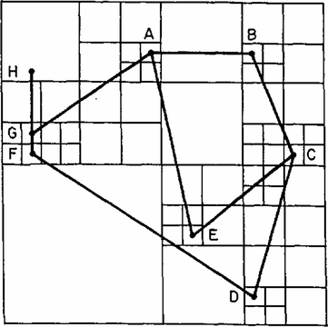
Remap for ALE hydrodynamics via direct interpolation and constraint optimization
Brendan Keith, Dohyun Kim, Boyan S. Lazarov, Ketan Mittal, Cosmin Petra, M. R. Schmidt, Vladimir Z. TomovSubmitted, 2026.
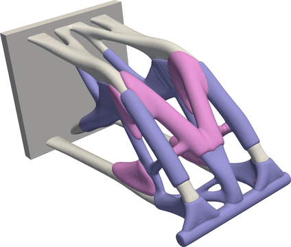
The SiMPL method for multi-material topology optimization
Peter Gangl, Brendan Keith, Dohyun Kim, Thomas M. SurowiecarXiv:2605.11994, revision submitted, 2026.
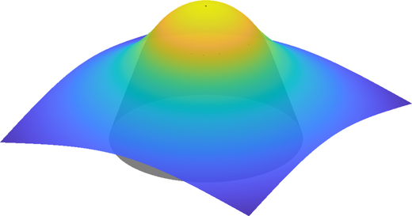
Proximal discontinuous Galerkin methods for variational inequalities
Alexandre Ern, Brendan Keith, Dohyun Kim, Rami Masri, Béatrice RivièrearXiv:2604.19708, submitted, 2026.
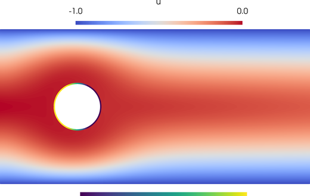
The proximal Galerkin method for non-symmetric variational inequalities
Guosheng Fu, Brendan Keith, Dohyun Kim, Rami Masri, Will PaznerarXiv:2602.14967, 2026.
Journal Articles
2026
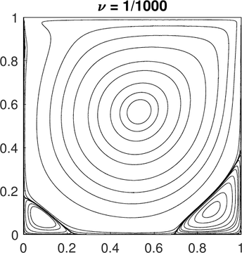
Pressure-robust staggered DG methods for the Navier–Stokes equations on general meshes
Dohyun Kim, Lina Zhao, Eric T. Chung, Eun-Jae ParkJ. Sci. Comput. 109 (2026), 45.
2025
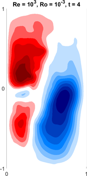
Finite element approximation to the non-stationary quasi-geostrophic equation
Dohyun Kim, Amiya K. Pani, Eun-Jae ParkESAIM Math. Model. Numer. Anal. 59 (2025), 1973–2003.
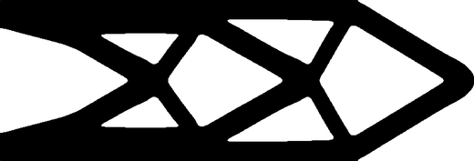
Analysis of the SiMPL method for density-based topology optimization
Brendan Keith, Dohyun Kim, Boyan S. Lazarov, Thomas M. SurowiecSIAM J. Optim. 35 (2025), 1134–1164.
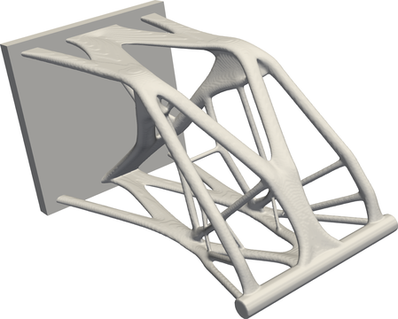
A simple introduction to the SiMPL method for density-based topology optimization
Dohyun Kim, Boyan S. Lazarov, Thomas M. Surowiec, Brendan KeithStruct. Multidiscip. Optim. 68 (2025).
2024
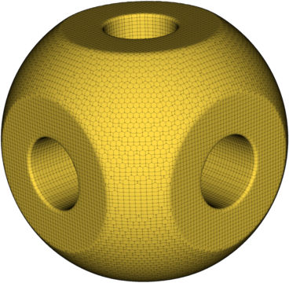
High-performance finite elements with MFEM
J. Andrej, N. Atallah, J.-P. Bäcker, J.-S. Camier, D. Copeland, V. Dobrev, Y. Dudouit, T. Duswald, B. Keith, Dohyun Kim, T. Kolev, B. Lazarov, K. Mittal, W. Pazner, S. Petrides, S. Shiraiwa, M. Stowell, V. TomovInt. J. High Perform. Comput. Appl. 38 (2024), 447–467.
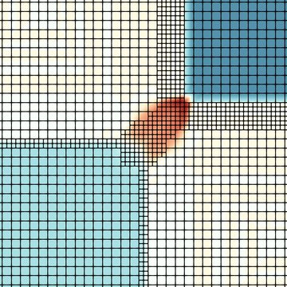
DynAMO: Multi-agent reinforcement learning for dynamic anticipatory mesh optimization with applications to hyperbolic conservation laws
Tarik Dzanic, Ketan Mittal, Dohyun Kim, Jiachen Yang, Socratis Petrides, Brendan Keith, Robert AndersonJ. Comput. Phys. 506 (2024), 112924.
2022
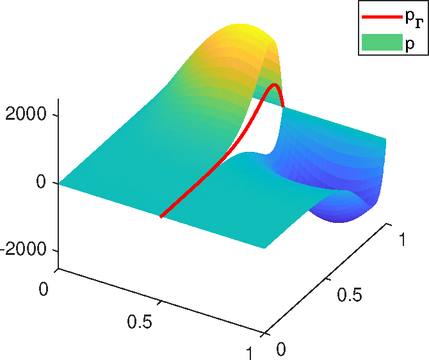
Staggered DG method with small edges for Darcy flows in fractured porous media
Lina Zhao, Dohyun Kim, Eun-Jae Park, Eric T. ChungJ. Sci. Comput. 90 (2022), 83.
2021
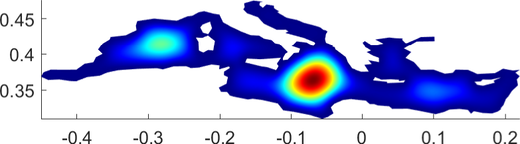
Morley finite element methods for the stationary quasi-geostrophic equation
Dohyun Kim, Amiya K. Pani, Eun-Jae ParkComput. Methods Appl. Mech. Engrg. 375 (2021), 113639.
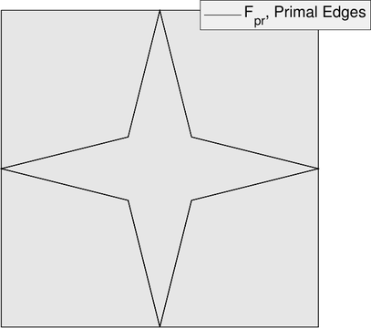
Review and implementation of staggered DG methods on polygonal meshes
Dohyun Kim, Lina Zhao, Eun-Jae ParkJ. Korean Soc. Ind. Appl. Math. 25(3) (2021).
2020
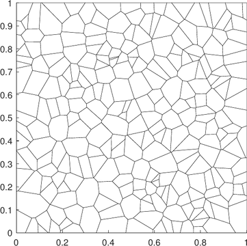
Staggered DG methods for the pseudostress-velocity formulation of the Stokes equations on general meshes
Dohyun Kim, Lina Zhao, Eun-Jae ParkSIAM J. Sci. Comput. 42 (2020), A2537–A2560.
2018
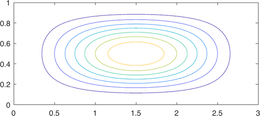
Error estimates of B-spline based finite-element methods for the stationary quasi-geostrophic equations of the ocean
Dohyun Kim, Tae-Yeon Kim, Eun-Jae Park, Dong-wook ShinComput. Methods Appl. Mech. Engrg. 335 (2018), 255–272.